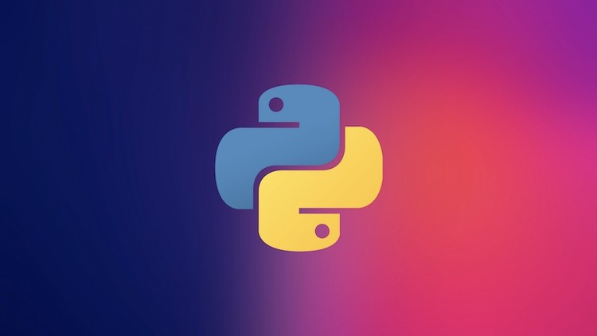
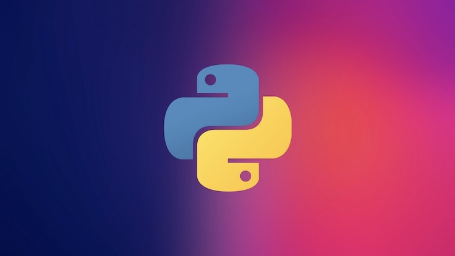

Kompyuterda dasturlash bu – kompyuter mikroprotsessori uchun turli buyruqlar berish, qachon, qayerda nimani o'zgartirish va nimalarni kiritish yoki chiqarish haqida buyruqlar berishdir. Ushbu maqolada, qanday dasturlash tillari borligi, eng keng tarqalgan dasturlash tillari va ularning farqi. Hamda, Dasturlashni o'rganish yo'llari haqida suhbatlashamiz Kompyuter dunyosida ko'plab dasturlash tillari mavjud bo'lib, dasturlash va unga qiziquvchilar soni ortib bormoqda. Bir xil turdagi ishni bajaradigan dasturlarni Basic, Pascal, Ci va boshqa tillarda yozish mumkin. Pascal, Fortran va Kobol tillari universal tillar hisoblanadi, Ci va Assembler tillari mashi tiliga ancha yaqin tillar bo'lib, quyi yoki o'rta darajali tillardir. Algoritmik til inson tillariga qanchalik yaqin bo'lsa, u tilga yuqori darajali til deyiladi. Mashina tili esa eng pastki darajali tildir. Mashina tili bu sonlardan iboratdir, Masalan: 010110100010101 Dasturlash tillari 2 ta katta guruhlarga bo'linadi, Quyi va Yuqori darajali dasturlash tili. Quyi darajali dasturlash tili ancha murakkab bo'lib ular juda maxsus sohalarda ishlatiladi va ularning mutaxassislari ham juda kam. Chunki quyi dasturlash tillari (masalan: assembler) ko'pincha miktoprotsessorlar bilan ishlashda kerak bo'lishi mumkin. Odatda turli dasturlash ishlari uchun yuqori darajali dasturlash tilidan keng foydalaniladi. EHM (Elektron Hisoblash Mashinasi) endi yuzaga kelgan paytda programma tuzishda, faqat mashina tillarida, ya'ni sonlar yordamida EHM bajarishi kerak bo'lgan amallarning kodlarida kiritilgan. Bu holda mashina uchun tushinarli sanoq, sistemasi sifatida 2 lik, 6 lik, 8 lik sanoq sistemalari bo'lgan. Programma mazkur sanoq sistemasidagi sonlar vositasida kiritilgan. Yuqori darajali dasturlashda, mashina tillariga qaraganda mashinaga moslashgan (yo'naltirilgan) belgili kodlardagi tillar hisoblanadi. Belgilar kodlashtirilgan tillarning asosiy tamoyillari shundaki, unda mashina kodlari ularga mos belgilar bilan belgilanadi, hamda xotirani avtomatik taqsimlash va xatolarni tashhis qilish kiritilgan. Bunday mashina moslashgan til - ASSEMBLER tili nomini oldi. Odatda dasturlash yuqori saviyali dasturlash tillari (Delphi, Java, C++, Python) vositasida amalga oshiriladi. Bu dasturlash tillarining semantikasi odam tiliga yaqinligi tufayli dastur tuzish jarayoni ancha oson kechadi. Ko'p ishlatiladigan dasturlash tillari. Biz hozir biladigan va ishlatadigan tillarning barchasi shu guruhga mansub. Ular insonga "tushunarli" tilda yoziladi. Ingliz tilini yaxshi biluvchilar programma kodini qiynalmasdan tushunishlari mumkin. Bu guruhga Fortran, Algol, C, Pascal, Cobol va h.k. tillar kiradi(ko`pchiligi hozirda deyarli qo`llanilmaydi).

 
